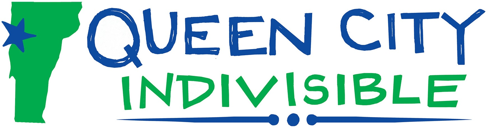
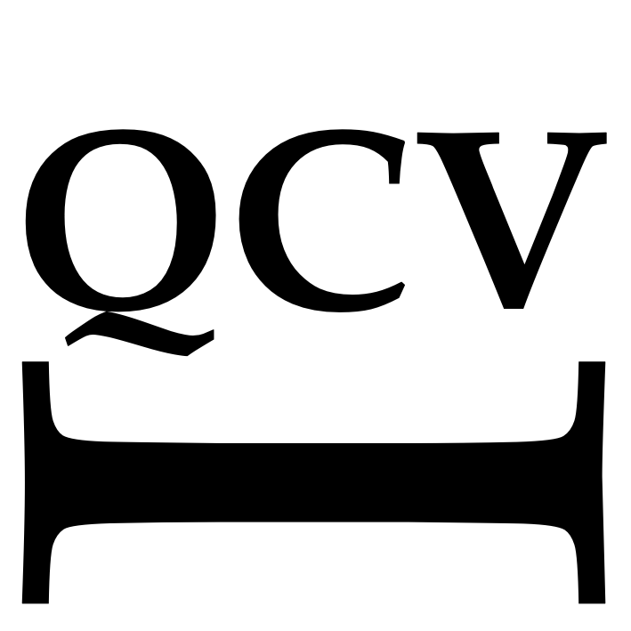

Call to Action!Saturday, May 2, 1:00 PM - 3:00 PM
Assemble at the top of Church Street, Burlington
Join the second annual World Press Freedom Day celebration to defend media independence and uphold fundamental principles of press freedom.
Third Act VT will lead marchers from the top of Church Street, around City Hall Park and back up Church Street.
The march is focused on supporting our local, independent and public media, and on upholding our First Amendment freedoms.
Bring signs supporting these freedoms, as well as condemning media conglomerates, suppression and cancellation of media figures' right to self-expression, the use of AI in place of human reporting, and other current actions that endanger freedom of the press.
For questions, contact Lois at tavtpublicmedia@gmail.com.
The session is rolling along and some good things are happening, but these bills need your attention now.
Sample message:
Dear Sen. [***],
I urge you to vote in favor of H849 (Civil suits for rights violations by law enforcement officers). It would go far to protect Vermonters from the ongoing destruction of our civil rights at the hands of the Federal government. As always, thanks for your service and good judgement.
[Your name]
[Your Town]
Sample message:
Dear Rep. [***],
I'm writing to ask you to support S209 (Sensitive Locations) and make it even stronger by including libraries in the list of protected places. As always, thanks for your service and good judgement.
[Your name]
[Your Town]
"Individually we are one drop. Together we are an ocean. " -- Ryunosuke Satoro
Every Wednesday | 4:00-5:00 PM (new time, starting 3/25)
ICE Federal Data Center | 188 Harvest Lane, Williston
Park at East Rise Credit Union
Bring a bench, chair or cushion, warm clothes, blanket, hand and feet warmers, umbrella. Our meditative sit is an opportunity to work with the challenging energy of this time energy which manifests in many ways, including the suffering caused by ICE in our community, in our world, and in our hearts. Our aspiration is not to judge the people who work in the building, but to change the energy that leads to present attitudes and policies.
If you choose to bring a sign, we hope that your message will respectfully raise questions about ICE's policies and actions, and convey our appreciation for migrants, and their right to fair and legal treatment. More info: Anne Damrosch.
Join your neighbors in telling Governor Phil Scott to hold the line against demands that the Vermont National Guard deploy illegally.
* We oppose sending Vermont's National Guard to American cities.
* We oppose any use of our National Guard to target civilians.
* We oppose the use of our National Guard in unsanctioned and illegal military operations overseas.
Sign the petition here.
About — Welcome — Call to Action! — Contact — Donate — Home
QCVI - April 18, 2026